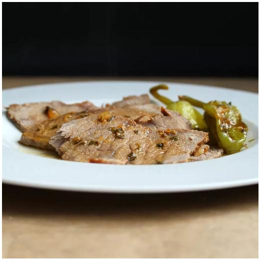

Mississippi Roast

Description
Slow cooker roast recipe, also called pepperoncini roast. Serve with egg noodles or mashed potatoes.
Ingredients
- 1 (4 pound) beef chuck roast
- 1/4 cup butter
- 5 pepperoncini peppers
- 1 (1 ounce) packet ranch dressing mix
- 1 (1 ounce) pack dry au jus mix
Directions
- Place roast in a slow cooker. Form a pocket in the top of the roast and place butter, pepperoncini peppers, ranch dressing mix, and au jus mix in the pocket.
- Cook on LOW for 8 hours.